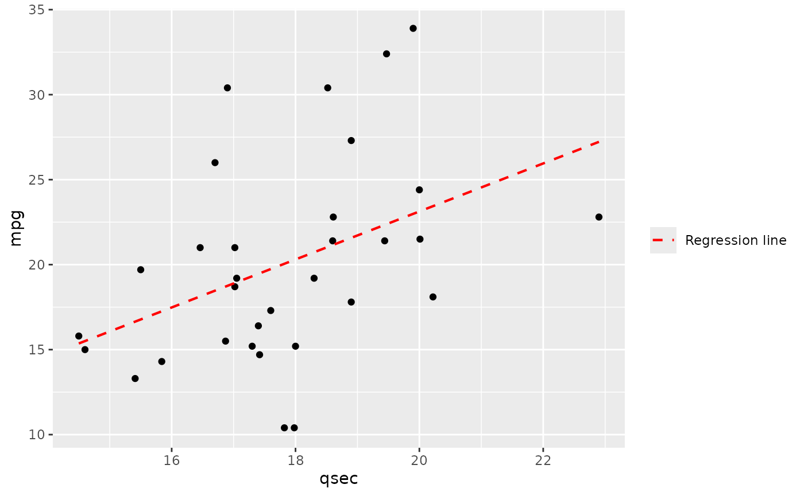
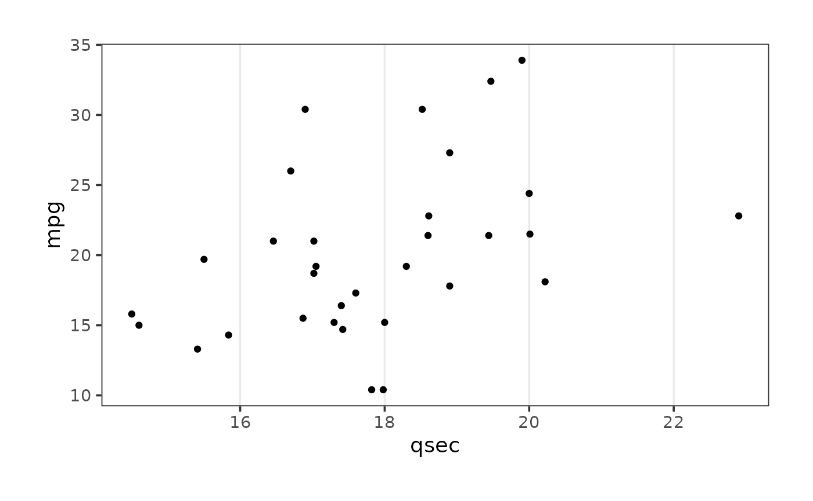

Functions plt_
functions_plt.Rmdplt_ functions are extensions to ggplot2
objects. So let’s define a base plot to apply the functions.
plot <-
ggplot(mtcars,aes(qsec,mpg))+
geom_point()
plotplt_flip_y_title
The goal of plt_flip_y_title is to flip the title from y
axis, so it can be read horizontally.
plot + plt_flip_y_titleplt_identity_line
The goal of plt_identity_line is to add a identity line
to a scatter plot.
plot + plt_identity_line(color = "red")plt_no_background
The goal of plt_no_background is to remove the
background.
plot + plt_no_backgroundplt_pinpoint
The goal of plt_pinpoint is to add a single point to a
plot.
plot + plt_pinpoint(x = 18,y = 25)plt_regression_line
The goal of plt_regression_line is to add a regression
line to a scatter plot.
plot + plt_regression_line(color = "red")
plt_scale_auto
The goal of plt_scale_auto is to add a automatic
scale.
plot + plt_scale_auto(axis = "x",n_breaks = 5)
plot +
plt_scale_auto(axis = "xy",n_breaks = 5)plt_scale_y_mirror
The goal of plt_scale_y_mirror is to mirror the y axis
on the right side.
plot_breaks <- seq(0,35,3)
plot_labels <- format_num(plot_breaks,digits = 2)
plot + plt_scale_y_mirror(breaks = plot_breaks, labels = plot_labels)plt_theme_map
The goal of plt_theme_map is to add a theme appropriate
for a map.
plot + plt_theme_map()
plt_theme_x
The goal of plt_theme_x is to remove major and minor
grid lines from y axis.
plot + plt_theme_x(margin = 1)
plt_theme_xy
The goal of plt_theme_xy is to remove minor grid lines
from x and y axis.
plot + plt_theme_xy(margin = 2)plt_theme_y
The goal of plt_theme_y is to remove major and minor
grid lines from x axis.
plot + plt_theme_y()plt_water_mark
The goal of plt_water_mark is to add a image as a
watermark in a ggplot2 object.
plot + plt_water_mark(vfx_watermark)